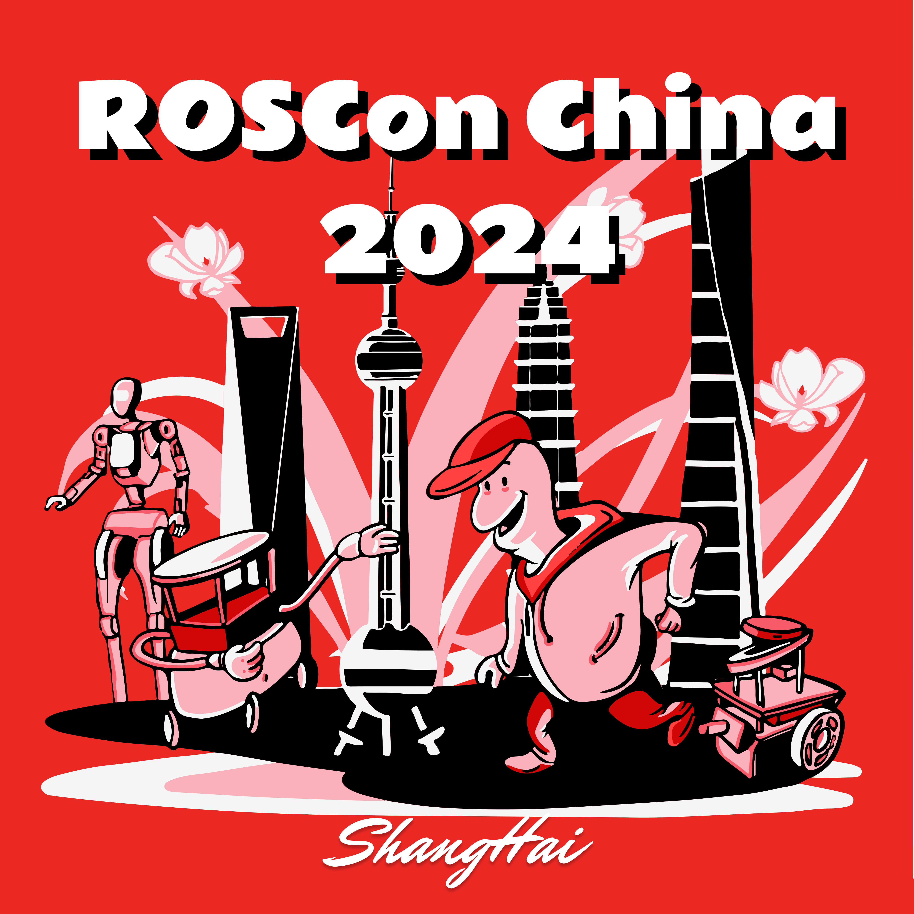

ROSCon China 2024
中国，上海
2024年12月7日-8日

ROSCon China由中国机器人教育基金会与国际ROSCon活动的组织方OSRF合作举办。ROSCon China 2024 定于2024年12月7日至8日在上海举行，这也是中国内地首次举办的ROSCon活动。
我们呼吁来自机器人和ROS社区的行业专家、研究人员和机器人爱好者为国内外的机器人社区赋能。无论你想学习最新的ROS技术，还是与ROS社区伙伴及机器人开发者分享想法，欢迎参与这次活动。如果你有任何问题、疑虑或想法，请及时联系ROSCon China 执委会。
Dates
重要日期
征集提案发布通知
2024年6月1日
研讨会提案提交截止日期
2024年11月15日
报告提交截止日期
2024年11月15日
Sponsors
赞助伙伴
ROSCon China 2024依据国际ROSCon惯例，将设立钻石、铂金、金牌、银牌等多个赞助级别。为了办好ROSCon China 2024盛会，主办方与组委会诚挚邀请相关单位踊跃参与赞助，携手共同促进机器人操作系统（ROS）、智能机器人技术研究与产业发展。ROSCon China 2024的展位和赞助数量非常有限。如果你有任何问题或疑虑，请联系执委会。
attend
CFP
ROSCon China 2024是为所有热爱ROS的开发者创建的一个交流和展示的平台。无论你是ROS新手还是资深专家，我们都非常期待你的加入！在这里可以展示你新研发的机器人项目、新开发的ROS软件包，分享机器人教学中的心得，甚至是对 ROS未来新功能的设想和建议。我们征集以下三种不同形式的活动内容：
- 主题演讲：围绕特定主题进行介绍，时间可以是10~30分钟，时间包括简短的提问环节
- 主题研讨会：围绕相关主题，组织行业专家学者进行开放式汇报与讨论，同时为从业者、学生提供思想碰撞的平台
- 快闪演说：在3~5分钟内，向观众展现你的ROS机器人创意或成果
特别提醒，ROSCon China 2024是一场线下活动，不支持远程在线演讲报告。演讲以中文为主，也欢迎英文演讲。
以上三种形式的内容主要围绕ROS1和ROS2相关主题展开。具体形式请参考历届全球ROSCon的视频资料。你有任何想要在会议上分享的主题或见解，请联系我们。
评审标准
所有提交至ROSCon China 2024的活动内容将执委会进行严格的评审。评审标准如下：
- ROS生态相关性：提交的内容应与ROS生态相关，并且为ROS开发者所关注的内容。其内容应避免过度依赖特定硬件，以确保技术的普适性和通用性，应有助于提升ROS开发者群体对技术的整体使用水平，促进知识共享和技术进步。
- 开放源代码可用性：我们更倾向于接收拥有开源代码的项目以及活动内容，这将有助于参与者复现并使用你分享的技术。
如果你有以上提及的ROS开源项目或活动内容想要提交，或是想要以其他方式参与ROS生态系统的建设，欢迎分享更多细节。我们期待你的参与和合作，共同推动ROS社区的发展。
研讨会申请
研讨会申请需要提交以下信息:
- 标题（不超过35字）
- 主讲人 (姓名，联系电话)
- 摘要 (不超过100字)
- 概述 - 概述研讨会的主要内容及其目标，供执委会审查
请在提案中详细描述目标受众、需求，以便执委会进行评估，将文件上传至指定网站，如有疑问时可随时联系执委会。
主题演讲申请
主题演讲申请需要提交以下信息:
- 标题（不超过35字）
- 主讲人 (姓名，联系电话)
- 演讲时长 (10，20或30分钟)
- 摘要 (不超过100字)
- 概述 - 包括大纲和目标，说明目标受众和演讲想要传达的主要内容，供执委会审查
- 音频摘要 - 关于演讲内容的音频概述（不超过1分钟），仅用于执委会审查（不公开）
- 介绍页面（可选） - 与演讲主题相关的介绍页面的URL链接
请将文件上传至指定网站，如遇到任何问题，请随时与执委会联系。
快闪演说
快闪演说环节为想要快速分享自己的项目演讲者提供了一个机会。如果你觉得进行一场主题演讲太过繁琐，那么快闪演说会是一个很好的选择。在2到3分钟的时间里，你可以向观众尽情展示你的创意。
Organizers
主席
张新宇（ROS教育基金会）
ARCHIVE
历届ROSCon
以下是历届ROSCon网站，其中包含了以往ROSCon演讲者的信息和演讲视频：
- ROSCon 2023 New Orleans, Louisiana
- ROSCon 2022 Kyoto, Japan
- ROS World 2021, Virtual
- ROS World 2020, Virtual
- ROSCon 2019 Macau
- ROSCon 2018 Madrid, Spain
- ROSCon 2017 Vancouver, Canada
- ROSCon 2016 Seoul, Korea
- ROSCon 2015 Hamburg, Germany
- ROSCon 2014 Chicago, USA
- ROSCon 2013 Stuttgart, Germany
- ROSCon 2012 St. Paul, USA
历届ROS暑期学校
以下是由ROS教育基金会资助的ROS暑期学校：
- ROS Summer School 2023（苏州大学，乐聚机器人）
- ROS Summer School 2022（合肥工业大学，古月居）
- ROS Summer School 2021（线上，古月居）
- ROS Summer School 2020（线上，古月居）
- ROS Summer School 2019（哈工大（合肥）创新研究院）
- ROS Summer School 2018（清华大学深圳研究生院，深圳）
- ROS Summer School 2017（华东师范大学，上海）
- ROS Summer School 2016（华东师范大学，上海）
- ROS Summer School 2015（华东师范大学，上海）
微信公众号